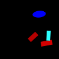
(1)
If a rectangle is the same color as a red rectangle there is a cross.
If more than one rectangle is a red shape there is a red ellipse.
The left red shape is a rectangle or the left rectangle is a cyan shape.
The red shape closer to the ellipse is an ellipse or there is a semicircle.
The lowermost rectangle is a red shape and there is a blue rectangle.
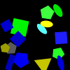
(2)
Less than a third of the shapes are blue shapes if and only if a cyan shape is bigger than a gray pentagon.
A shape is a square if and only if the uppermost blue shape is a pentagon.
If the smallest blue shape is a pentagon a yellow shape is to the right of a cross.
A shape is a gray ellipse if and only if there is a green pentagon.
A pentagon is behind a pentagon or a blue ellipse is behind a green pentagon.
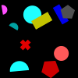
(3)
A semicircle is a different color from a blue shape and there is a gray pentagon.
The smallest cyan shape is a semicircle and exactly two semicircles are cyan shapes.
If exactly all magenta shapes are semicircles a semicircle is the same color as a red circle.
A cyan circle is behind a yellow shape or not half the shapes are magenta semicircles.
A cross is a different color from a red shape if and only if not three shapes are crosses.
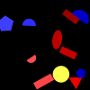
(4)
The lowermost pentagon is a blue shape and a red shape is to the left of a red rectangle.
Less than all rectangles are red shapes if and only if a pentagon is a red shape.
If the left pentagon is a blue shape a red shape is the same shape as a cyan semicircle.
There is a blue ellipse if more than one shape is a triangle.
Exactly half the red shapes are rectangles and less than five pentagons are blue shapes.

(5)
If a gray square is behind a cyan ellipse a yellow cross is farther from a triangle than the blue shape.
There is a rectangle if and only if the darker square is a magenta shape.
Exactly four ellipses are yellow shapes if and only if there is a green rectangle.
The cross farthest from the semicircle is a cyan shape if more than two thirds of the semicircles are green shapes.
The left yellow shape is an ellipse if and only if a shape is a magenta ellipse.
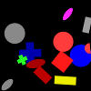
(6)
A shape is a triangle and a yellow circle is the same color as a circle.
A circle is to the right of a gray rectangle or the rightmost red shape is an ellipse.
A gray semicircle is a different color from a semicircle or a shape is a red shape.
A gray shape is to the right of a gray circle and a shape is a red semicircle.
If a magenta shape is to the left of a red ellipse the darker cross is a green shape.

(7)
There is a triangle and a shape is a blue triangle.
At least a quarter of the triangles are magenta shapes if there is a cross.
There is a yellow shape and a triangle is a magenta shape.
If less than a third of the shapes are triangles there is a triangle.
A magenta shape is the same shape as a magenta triangle and a red triangle is to the left of a blue triangle.
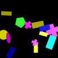
(8)
A rectangle is a different color from a magenta cross if and only if exactly three quarters of the magenta shapes are crosses.
If there is a yellow rectangle a shape is a cross.
Less than three shapes are circles or an ellipse is behind a magenta cross.
If an ellipse is darker than a magenta cross a gray shape is bigger than a yellow shape.
If an ellipse is the same color as a magenta cross a circle is to the left of a red square.
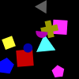
(9)
The biggest blue shape is a circle or a shape is a yellow triangle.
There is a magenta triangle and more than a quarter of the shapes are crosses.
A square is in front of a yellow shape or there is a cyan square.
A yellow shape is a pentagon and the leftmost pentagon is a magenta shape.
A shape is a cyan rectangle and a blue circle is to the right of a magenta shape.
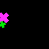
(10)
The lightest green shape is a semicircle or a magenta shape is bigger than a cross.
There is a cross or the darkest cross is a magenta shape.
There is an ellipse if a green shape is the same shape as a magenta cross.
There is a cyan cross if and only if a magenta shape is a cross.
There is a yellow shape if and only if there is a green cross.
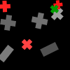
(11)
There is a cyan shape or the darkest rectangle is a green shape.
There is a red cross or a gray shape is to the left of a red shape.
A green shape is smaller than a red cross and a shape is a red rectangle.
A cross is in front of a gray shape or exactly two thirds of the shapes are crosses.
If a shape is a red cross a red rectangle is below a gray cross.
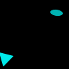
(12)
An ellipse is the same color as a cyan shape and the darker cyan shape is a triangle.
There is a red shape if and only if a yellow ellipse is the same color as a triangle.
An ellipse is a magenta shape and a shape is an ellipse.
A triangle is a green shape if and only if a cyan triangle is to the left of a cyan shape.
There is a gray ellipse or the smallest cyan shape is a triangle.

(13)
Either a rectangle is a different color from a green shape or exactly one shape is a rectangle.
Less than three quarters of the gray shapes are rectangles or a gray shape is bigger than a rectangle.
More than two thirds of the shapes are yellow shapes or a rectangle is a gray shape.
Exactly no rectangle is a gray shape or a yellow shape is smaller than a gray rectangle.
There is a gray semicircle if and only if at least half the shapes are semicircles.

(14)
The bigger blue shape is a square or a green shape is smaller than a blue pentagon.
A red pentagon is above a square or a red shape is a pentagon.
There is a blue pentagon if and only if a green shape is a square.
There is a blue pentagon and a pentagon is a blue shape.
More than five shapes are red pentagons if and only if a green pentagon is to the right of a blue pentagon.

(15)
The lightest cyan shape is a cross if and only if less than all shapes are gray shapes.
At least three quarters of the circles are gray shapes or a red circle is farther from a yellow triangle than the green ellipse.
The right red shape is a circle or there is a red rectangle.
A cross is a red shape or a blue shape is the same shape as a circle.
A triangle is a different color from a gray circle if and only if there is a blue pentagon.
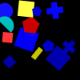
(16)
At least zero crosses are blue shapes and a blue shape is darker than a square.
If the leftmost cross is a blue shape a blue rectangle is lighter than a blue shape.
If a cross is closer to a blue circle than the cyan shape a shape is a gray shape.
Less than a third of the blue shapes are squares if a red shape is farther from a square than the red square.
If at most half the shapes are blue shapes a red shape is bigger than a pentagon.

(17)
A shape is a gray shape if and only if the leftmost circle is a magenta shape.
A shape is an ellipse if and only if the upper pentagon is a red shape.
A semicircle is darker than an ellipse if the square farther from the rectangle is a magenta shape.
The ellipse closest to the blue rectangle is a blue shape if an ellipse is a green shape.
The cross farther from the magenta shape is a yellow shape and the smaller circle is a blue shape.

(18)
If a square is a cyan shape a rectangle is in front of a gray square.
There is a cyan square if a green shape is a different color from a gray square.
A magenta rectangle is in front of a gray shape if and only if a gray shape is a square.
A gray shape is bigger than a cyan square and at most a third of the shapes is rectangles.
There is a green rectangle or a shape is a magenta square.
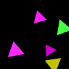
(19)
Exactly five shapes are triangles or exactly no shape is a triangle.
A shape is a triangle or the upper magenta shape is a triangle.
There is a gray triangle if and only if a shape is a magenta triangle.
Less than one shape is a yellow shape if and only if a magenta shape is to the right of a yellow triangle.
A magenta triangle is the same shape as a magenta shape and a yellow shape is bigger than a magenta shape.

(20)
A triangle is to the left of a green shape and there is a gray pentagon.
If a red shape is the same shape as a yellow triangle a triangle is above a blue pentagon.
The upper circle is a green shape or less than one shape is a green shape.
A square is the same color as a yellow ellipse and the right cyan shape is a circle.
There is a gray ellipse or the uppermost circle is a red shape.
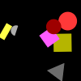
(21)
If a shape is a gray triangle a shape is a red rectangle.
Not five shapes are magenta squares and a green shape is bigger than a circle.
There is a red semicircle if there is a circle.
There is a red circle if a red shape is bigger than a circle.
A triangle is a gray shape and there is a red circle.
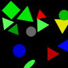
(22)
A red shape is smaller than a triangle if and only if the blue left shape is a circle.
The triangle closest to the ellipse is a green shape if there is a triangle.
A red triangle is lighter than a red triangle and there is a circle.
There is a gray circle or the lighter green shape is a pentagon.
A green triangle is farther from a blue triangle than the gray circle or the smallest triangle is a green shape.
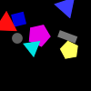
(23)
If exactly one cyan shape is a pentagon exactly a quarter of the shapes are gray circles.
A shape is a blue shape or a triangle is a blue shape.
There is a magenta rectangle or more than no blue shape is a rectangle.
Less than two shapes are yellow shapes if a yellow shape is a triangle.
A cyan shape is to the left of a red triangle if and only if the darker rectangle is a blue shape.
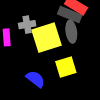
(24)
If less than three quarters of the ellipses are gray shapes a rectangle is darker than a cross.
The rightmost yellow shape is a square and the right square is a yellow shape.
A cross is bigger than a yellow shape if and only if at most four shapes are crosses.
A yellow shape is a cross if and only if a red rectangle is closer to a cross than the magenta rectangle.
There is a cross and a shape is a gray cross.

(25)
Exactly zero shapes are circles if and only if a blue shape is smaller than a circle.
Less than one shape is a blue square and at most two shapes are cyan triangles.
A circle is farther from a blue shape than the red shape and a circle is a different color from a red shape.
If a circle is a blue shape exactly zero shapes are cyan circles.
The uppermost blue shape is a square and there is a cyan square.

(26)
The gray shape farthest from the magenta circle is a square if and only if the darkest square is a green shape.
More than zero gray shapes are squares if and only if the lowermost square is a yellow shape.
A red shape is a circle or there is a blue square.
There is a green semicircle or a pentagon is to the right of a gray square.
The square closer to the blue circle is a gray shape if a shape is a blue rectangle.

(27)
A magenta rectangle is bigger than a magenta rectangle and a shape is a square.
A magenta shape is a rectangle and a shape is a magenta rectangle.
The darker rectangle is a magenta shape and there is a rectangle.
At least three quarters of the shapes are magenta rectangles if and only if not four shapes are magenta shapes.
There is a magenta shape and a rectangle is smaller than a magenta shape.
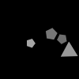
(28)
A yellow shape is a different shape from a gray pentagon if and only if a green shape is below a pentagon.
There is a gray triangle and there is a triangle.
There is a green shape if and only if a shape is a gray triangle.
A gray pentagon is bigger than a gray pentagon and not half the shapes are gray pentagons.
The closest pentagon to the gray triangle is a gray shape or a pentagon is the same color as a pentagon.

(29)
A circle is a different color from a magenta rectangle and the pentagon closer to the red triangle is a cyan shape.
If a pentagon is the same shape as a green shape a pentagon is a red shape.
At least two magenta shapes are semicircles or a semicircle is a cyan shape.
A semicircle is in front of a cyan shape or the yellow shape closer to the magenta semicircle is a semicircle.
If more than five shapes are blue circles a magenta rectangle is the same color as a semicircle.
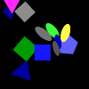
(30)
A shape is a magenta ellipse and a shape is an ellipse.
There is a green rectangle or a cyan shape is closer to a green square than the gray square.
The lowermost blue shape is a semicircle if and only if there is a gray square.
Not no blue shape is a triangle or a green shape is closer to a gray ellipse than the pentagon.
A gray shape is below a blue shape and the uppermost triangle is a magenta shape.
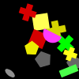
(31)
At least half the crosses are green shapes if the lighter green shape is a rectangle.
A semicircle is a yellow shape or the uppermost cross is a yellow shape.
A circle is a different shape from a yellow shape if and only if the biggest gray shape is a pentagon.
If a cross is a red shape an ellipse is a different color from a gray pentagon.
If a shape is a red shape a yellow cross is the same shape as a gray shape.
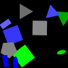
(32)
A rectangle is a different color from a green shape if and only if a cyan shape is lighter than a green triangle.
There is a green rectangle or less than a quarter of the triangles are blue shapes.
A triangle is to the left of a green cross if and only if less than two shapes are pentagons.
At most two shapes are rectangles and a red shape is a square.
The gray shape farthest from the blue ellipse is a square and a shape is a green circle.
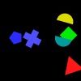
(33)
A magenta shape is farther from a red triangle than the blue cross or the blue shape farther from the yellow shape is a cross.
Exactly one shape is a magenta shape if and only if a blue shape is closer to a blue cross than the triangle.
A green square is behind a cyan semicircle and there is a red triangle.
A cyan shape is a different shape from a blue pentagon if and only if the lighter square is a red shape.
Exactly four shapes are cyan shapes if and only if a red ellipse is farther from a pentagon than the cyan semicircle.

(34)
More than three quarters of the magenta shapes are semicircles and the lower magenta shape is an ellipse.
A shape is a semicircle or at least half the shapes are green ellipses.
The right magenta shape is a semicircle or the rightmost magenta shape is a rectangle.
A cyan semicircle is a different shape from a green shape if and only if a semicircle is a cyan shape.
A yellow semicircle is behind a cyan semicircle if and only if a shape is an ellipse.
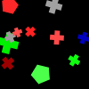
(35)
A green cross is in front of a green shape and there is a red cross.
At least one shape is a green cross if and only if a green shape is to the right of a red cross.
At most one shape is a red shape and a cross is the same color as a green pentagon.
Exactly five pentagons are red shapes or a gray shape is below a green shape.
The lower pentagon is a cyan shape if and only if exactly zero red shapes are semicircles.

(36)
A magenta shape is bigger than a magenta square if and only if the smaller square is a magenta shape.
A green rectangle is below a magenta shape and a cross is a different color from a red rectangle.
The smallest magenta shape is a square and a rectangle is lighter than a gray rectangle.
If exactly two shapes are triangles the rightmost magenta shape is a rectangle.
A red rectangle is behind a gray square or a yellow semicircle is below a magenta rectangle.
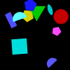
(37)
If a blue semicircle is the same color as a pentagon a magenta shape is a different shape from a green triangle.
A shape is a cyan semicircle and a yellow pentagon is behind a cyan shape.
A cyan shape is a semicircle if and only if a shape is a cyan pentagon.
A shape is a blue semicircle if and only if a cyan semicircle is to the right of a magenta shape.
A cyan ellipse is closer to a blue rectangle than the blue semicircle if and only if a triangle is behind a pentagon.
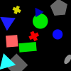
(38)
The left square is a gray shape or a cyan shape is bigger than a blue shape.
A cyan shape is above a blue circle and there is an ellipse.
The biggest blue shape is a square if there is a cross.
At least zero shapes are blue triangles and a blue triangle is darker than a circle.
Exactly two shapes are green shapes and a red cross is above a green rectangle.
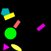
(39)
A circle is a different color from a magenta rectangle if and only if a pentagon is to the right of a rectangle.
A magenta shape is the same shape as a yellow rectangle and a rectangle is a different color from a magenta triangle.
If a yellow rectangle is darker than an ellipse a shape is a red ellipse.
A cyan shape is below a magenta triangle and a shape is a cyan triangle.
Not zero shapes are cyan pentagons if and only if the uppermost yellow shape is a rectangle.

(40)
A pentagon is the same color as a green ellipse if and only if a yellow shape is above a blue semicircle.
A green shape is smaller than a gray pentagon and a pentagon is the same shape as a gray shape.
A yellow cross is closer to a green cross than the blue shape and a green pentagon is farther from a cross than the semicircle.
If at least a quarter of the green shapes are ellipses there is a red shape.
If a gray shape is bigger than a pentagon a gray semicircle is below a green ellipse.

(41)
More than three shapes are green rectangles if and only if a square is darker than a cyan pentagon.
A shape is a cyan pentagon if and only if the smallest semicircle is a magenta shape.
There is a green semicircle if and only if exactly three quarters of the shapes are cyan pentagons.
A gray shape is bigger than a magenta semicircle if and only if the green left shape is a rectangle.
If a cyan pentagon is farther from a green pentagon than the yellow shape the smallest square is a cyan shape.

(42)
A red shape is to the left of a red semicircle or a shape is a triangle.
At most two shapes are blue squares if and only if a magenta shape is bigger than a red square.
A cross is the same color as a blue square if a red shape is a square.
If the blue shape farther from the magenta shape is a square there is a rectangle.
A blue square is closer to a red square than the magenta shape and at most one blue shape is a square.

(43)
If a cyan shape is to the right of a rectangle there is a gray cross.
If at least three shapes are gray squares at least one gray shape is a square.
A shape is a yellow cross if and only if the lighter blue shape is a cross.
The lighter square is a gray shape or less than four shapes are gray squares.
A square is a gray shape or a blue rectangle is closer to a green square than the blue cross.

(44)
Not one shape is a magenta shape if the lowermost red shape is a semicircle.
There is a triangle or more than two yellow shapes are triangles.
A magenta semicircle is closer to a red rectangle than the cross if and only if a magenta shape is a different shape from a semicircle.
A yellow shape is bigger than a cyan semicircle if and only if a cross is to the right of a cyan triangle.
Less than a third of the shapes are gray shapes and a yellow triangle is behind a gray shape.
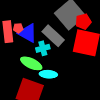
(45)
There is a square or a red shape is a different shape from a red rectangle.
There is a red shape and a red shape is a square.
At most two shapes are red squares if and only if a triangle is to the right of a cross.
A pentagon is a green shape and there is a red cross.
The rightmost square is a gray shape if and only if less than a third of the cyan shapes are crosses.
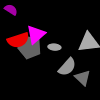
(46)
A pentagon is behind a red shape if a blue shape is a pentagon.
A shape is a gray semicircle if the gray left shape is a semicircle.
At least a third of the shapes are semicircles if and only if a gray semicircle is the same shape as a magenta shape.
There is a gray ellipse and the rightmost magenta shape is a triangle.
A shape is a magenta semicircle or a pentagon is a different color from a triangle.
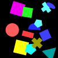
(47)
There is a magenta shape or more than three quarters of the shapes are red rectangles.
The leftmost cross is a red shape and the darker pentagon is a cyan shape.
A cyan pentagon is lighter than a cyan pentagon if and only if the square farther from the semicircle is a red shape.
The smallest square is a green shape or a square is above a blue semicircle.
A cyan shape is a different color from a cross and exactly one shape is a cyan ellipse.
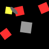
(48)
A red shape is bigger than a gray square if and only if a red shape is a square.
If a red square is closer to a red shape than the yellow shape an ellipse is a different color from a gray square.
More than five shapes are ellipses or there is a green square.
If a red ellipse is to the right of a square there is a red shape.
There is a gray shape if and only if a circle is behind an ellipse.

(49)
A shape is a magenta shape if there is a semicircle.
A shape is a magenta semicircle and there is a rectangle.
The lowermost semicircle is a yellow shape and less than two shapes are gray semicircles.
There is a gray shape if and only if a shape is a yellow ellipse.
A green shape is a cross or a green shape is a different color from a yellow semicircle.

(50)
At most a third of the circles are magenta shapes or a red shape is farther from a magenta shape than the blue shape.
There is a magenta shape if and only if a rectangle is farther from a green shape than the magenta cross.
An ellipse is a different color from a magenta square and a shape is a magenta rectangle.
Not three quarters of the shapes are magenta squares or a circle is the same shape as a magenta shape.
A cyan circle is behind a magenta shape and a green shape is a rectangle.

(51)
More than half the shapes are cyan squares and the cyan shape farther from the gray ellipse is a square.
If a square is the same color as a cyan shape a shape is a gray ellipse.
A square is to the left of a cyan shape if and only if at most five shapes are gray shapes.
A square is above a gray shape and there is a gray shape.
The leftmost gray shape is an ellipse if and only if a square is above a cyan square.
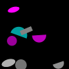
(52)
If a gray circle is below a magenta circle more than three shapes are gray circles.
An ellipse is a cyan shape if and only if there is a gray shape.
A shape is an ellipse or a gray circle is to the left of a semicircle.
There is a gray cross or the leftmost semicircle is a magenta shape.
More than a quarter of the cyan shapes are circles if and only if a shape is a cyan semicircle.
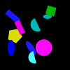
(53)
A cyan semicircle is darker than a cyan semicircle if and only if an ellipse is the same color as a cyan semicircle.
A blue shape is bigger than a cyan ellipse or a shape is a semicircle.
An ellipse is a blue shape if and only if an ellipse is a different color from a cyan shape.
A shape is a green pentagon and a blue shape is bigger than a cyan ellipse.
Not three quarters of the shapes are yellow pentagons and less than half the shapes are magenta circles.
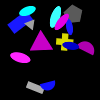
(54)
A red shape is bigger than a blue ellipse if and only if a triangle is a different color from a cyan ellipse.
There is a gray triangle if and only if a blue shape is above a blue shape.
A magenta triangle is closer to a gray shape than the pentagon and at most five gray shapes are triangles.
The left triangle is a red shape if and only if an ellipse is a cyan shape.
A yellow semicircle is below a blue ellipse and a shape is a blue rectangle.
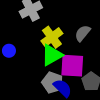
(55)
A shape is a yellow cross or less than two magenta shapes are squares.
If the pentagon farther from the blue semicircle is a gray shape the biggest gray shape is a semicircle.
At most all shapes are yellow crosses or a shape is a gray shape.
More than a quarter of the shapes are crosses and a cross is below a triangle.
A gray shape is to the right of a semicircle if and only if there is an ellipse.
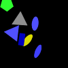
(56)
An ellipse is below a triangle if and only if there is a circle.
A triangle is the same color as a blue rectangle if and only if the lowermost blue shape is an ellipse.
A shape is a green pentagon and there is a blue rectangle.
At most a quarter of the shapes are blue ellipses or a gray shape is an ellipse.
There is a blue rectangle if and only if at least a quarter of the shapes are triangles.
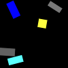
(57)
A gray shape is smaller than a gray shape if and only if the darker rectangle is a yellow shape.
A yellow shape is the same shape as a gray rectangle or a square is in front of a gray rectangle.
If there is a blue shape a magenta shape is a different color from a blue rectangle.
If a blue shape is above a cyan rectangle a cross is to the right of a blue shape.
If a gray shape is to the right of a blue shape a blue shape is a square.
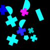
(58)
More than zero shapes are cyan shapes if and only if not three cyan shapes are semicircles.
The cross closest to the pentagon is a red shape if and only if a cross is farther from a pentagon than the magenta shape.
There is a blue cross if and only if a magenta shape is a rectangle.
If a shape is a red pentagon a circle is a cyan shape.
There is a cyan semicircle and a blue shape is a pentagon.
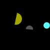
(59)
If there is a yellow circle there is a circle.
There is a gray semicircle if and only if a shape is a yellow shape.
A circle is in front of a yellow semicircle or less than one shape is a cyan shape.
A circle is a yellow shape or a shape is a blue shape.
A circle is to the right of a gray shape if and only if a square is closer to a cyan circle than the yellow shape.

(60)
If the biggest magenta shape is a rectangle a cyan shape is bigger than a green pentagon.
A pentagon is lighter than a cyan circle or a green shape is smaller than a yellow rectangle.
A shape is a yellow square and a cyan rectangle is above a cyan circle.
If a magenta ellipse is darker than a square an ellipse is a different color from a gray triangle.
Exactly a third of the shapes are cyan shapes and there is a magenta cross.

(61)
The darkest square is a gray shape and the gray shape closest to the cross is a pentagon.
The rightmost square is a red shape or not three shapes are blue crosses.
The lower square is a gray shape or a gray shape is the same color as a gray square.
A gray shape is farther from a square than the circle or the leftmost triangle is a blue shape.
A gray shape is lighter than a square if and only if a shape is a red square.

(62)
There is a green ellipse if and only if there is a triangle.
If there is a gray triangle a shape is a square.
The darkest circle is a blue shape if and only if a green triangle is the same shape as a gray shape.
A shape is a gray shape and there is a magenta shape.
If a gray shape is a circle a green shape is bigger than a green semicircle.

(63)
If not three quarters of the semicircles are green shapes the leftmost green shape is a triangle.
At most one shape is a blue pentagon if and only if the darkest green shape is a semicircle.
If a pentagon is the same color as a green semicircle a green shape is a circle.
If a yellow shape is to the left of a pentagon a cross is to the left of a yellow pentagon.
A yellow shape is smaller than a semicircle and a semicircle is the same color as a green semicircle.

(64)
The circle farther from the yellow rectangle is a red shape and the lightest ellipse is a blue shape.
At most three shapes are cyan shapes if there is a rectangle.
An ellipse is below a yellow rectangle and the left gray shape is a semicircle.
A shape is a square or the lower circle is a gray shape.
A red ellipse is to the left of a red ellipse or an ellipse is lighter than a red ellipse.
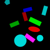
(65)
A cyan shape is the same shape as a red circle if and only if a cyan circle is below a cyan pentagon.
A cyan circle is lighter than a pentagon and not half the blue shapes are rectangles.
A cyan shape is below a red ellipse and a magenta shape is a circle.
A shape is a red pentagon if a red shape is a rectangle.
The biggest green shape is a rectangle if and only if not two thirds of the circles are cyan shapes.

(66)
A magenta square is a different color from a pentagon if and only if there is a magenta shape.
There is a blue circle if a shape is a circle.
More than two thirds of the shapes are magenta squares or a shape is a gray circle.
At least five shapes are magenta shapes if and only if a pentagon is above a cyan circle.
If a green shape is a different shape from a magenta square a shape is a magenta circle.

(67)
More than half the shapes are rectangles and a magenta rectangle is lighter than a magenta shape.
A yellow semicircle is to the right of a magenta triangle and the rectangle closest to the blue semicircle is a green shape.
If there is a red rectangle less than half the shapes are yellow semicircles.
There is a cyan triangle or a magenta rectangle is to the right of a yellow shape.
A shape is an ellipse if and only if less than three shapes are magenta rectangles.

(68)
If an ellipse is the same color as a magenta cross exactly a third of the shapes are yellow shapes.
There is a blue square or more than a third of the shapes is red shapes.
At least half the shapes are ellipses or the biggest gray shape is a square.
More than four shapes are semicircles and an ellipse is above a green ellipse.
A magenta shape is the same shape as a red ellipse if and only if a shape is a green ellipse.
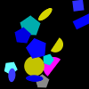
(69)
Less than one shape is a pentagon if and only if exactly two thirds of the shapes are squares.
A blue shape is a semicircle if and only if a blue pentagon is closer to a blue pentagon than the magenta semicircle.
The cyan shape closest to the square is a pentagon and there is a triangle.
If more than one shape is a yellow circle a rectangle is a yellow shape.
There is a green shape or a shape is a cyan square.

(70)
If a square is farther from a green shape than the blue shape there is a yellow shape.
If more than zero magenta shapes are ellipses a shape is a gray cross.
If a magenta shape is below a square a blue cross is behind a magenta shape.
Not no blue shape is a cross if and only if a shape is a magenta square.
A gray ellipse is farther from a magenta shape than the cross and the uppermost green shape is a square.

(71)
Less than five shapes are blue shapes or a shape is a red circle.
A shape is a cyan rectangle if and only if there is a blue ellipse.
The lowermost green shape is an ellipse and not four circles are blue shapes.
At least two thirds of the magenta shapes are ellipses if and only if a shape is a magenta circle.
At least two shapes are cyan shapes or a blue shape is below an ellipse.

(72)
If less than a quarter of the shapes are pentagons there is a gray semicircle.
If at most two shapes are circles the lowermost pentagon is a green shape.
A green shape is the same shape as a gray square if and only if less than two shapes are yellow circles.
There is a yellow cross if a circle is a blue shape.
There is a triangle or more than four shapes are crosses.

(73)
A gray shape is smaller than a red triangle and a triangle is a different color from a red shape.
A red shape is a different shape from a green pentagon and a red triangle is farther from a green triangle than the pentagon.
A shape is a triangle if and only if there is a blue shape.
A magenta rectangle is darker than a triangle or a pentagon is to the left of a gray shape.
At most a third of the red shapes are triangles if and only if a green pentagon is a different shape from a red shape.
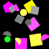
(74)
A shape is a magenta semicircle and a green shape is a different shape from a magenta square.
A magenta circle is behind a gray square and at least one shape is a gray square.
If a magenta semicircle is below a gray square there is a square.
At most five shapes are squares and a gray square is closer to a gray circle than the magenta pentagon.
At most half the shapes are green circles and a gray shape is a different shape from a magenta semicircle.
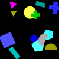
(75)
A triangle is closer to a pentagon than the green shape if the lighter blue shape is a semicircle.
The smallest cross is a green shape if and only if a shape is a pentagon.
Not two yellow shapes are triangles if and only if a green shape is a cross.
A semicircle is to the right of a rectangle or the smaller cyan shape is a pentagon.
A shape is a gray ellipse or at least a quarter of the shapes are yellow circles.

(76)
Exactly a quarter of the circles are magenta shapes or the pentagon closest to the yellow circle is a yellow shape.
If at least zero shapes are red ellipses a shape is a red pentagon.
If a gray ellipse is lighter than an ellipse the lightest red shape is a rectangle.
There is a yellow rectangle if and only if a shape is a red cross.
More than two shapes are circles if there is a blue circle.

(77)
At least a third of the shapes are green shapes if and only if the closest triangle to the cyan rectangle is a magenta shape.
Exactly one shape is a cyan ellipse or a shape is a gray shape.
There is a cyan ellipse or a blue shape is bigger than a cyan ellipse.
A shape is a yellow semicircle if a shape is a triangle.
A cyan triangle is to the right of an ellipse and a cyan shape is smaller than a green rectangle.
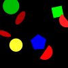
(78)
A green shape is below a red shape or the bigger green shape is a square.
The closest ellipse to the blue shape is a yellow shape and there is a yellow ellipse.
The biggest ellipse is a red shape if and only if more than two ellipses are red shapes.
There is a red shape and less than two pentagons are blue shapes.
There is a blue pentagon if and only if the rightmost semicircle is a blue shape.
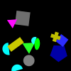
(79)
A shape is a gray square and a cyan shape is a semicircle.
At least a quarter of the shapes are cyan shapes if and only if not three shapes are cyan semicircles.
A blue shape is the same shape as a cyan semicircle if and only if exactly three quarters of the shapes are gray squares.
Exactly two shapes are ellipses if and only if the uppermost pentagon is a yellow shape.
A circle is above a yellow rectangle or the upper triangle is a green shape.
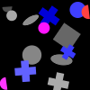
(80)
A gray shape is the same shape as a magenta circle or the smaller gray shape is a cross.
A shape is a green shape if the smallest blue shape is a cross.
At most a third of the shapes are magenta shapes and a shape is a gray ellipse.
There is a gray semicircle and a shape is a gray circle.
A square is the same color as a blue circle and a green shape is bigger than a blue cross.

(81)
A circle is darker than a magenta shape if and only if a pentagon is a cyan shape.
There is a yellow rectangle or a blue shape is a square.
A shape is a magenta square if and only if a magenta shape is the same shape as a red pentagon.
The pentagon farthest from the rectangle is a magenta shape or there is a red ellipse.
There is a gray rectangle if and only if a square is farther from a magenta square than the circle.
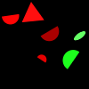
(82)
If a green shape is to the left of a red triangle a shape is a red triangle.
If there is a green shape the lighter green shape is a triangle.
If a red shape is smaller than a red semicircle a shape is a yellow square.
If at least half the ellipses are green shapes a green semicircle is a different shape from a red shape.
A gray shape is a semicircle if and only if a green semicircle is bigger than a red semicircle.
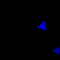
(83)
A red shape is the same shape as a blue triangle or the lighter triangle is a cyan shape.
If a triangle is a blue shape a shape is a blue circle.
There is a gray square or the lightest triangle is a yellow shape.
There is a triangle if and only if the rightmost triangle is a blue shape.
A blue shape is a pentagon or not half the shapes are triangles.

(84)
There is a cyan pentagon if and only if a red shape is smaller than a magenta square.
A triangle is a different color from a blue pentagon if and only if a red cross is to the right of an ellipse.
A magenta square is to the right of a red square and a magenta shape is farther from a blue shape than the gray shape.
A shape is a red cross and there is a blue pentagon.
The square closest to the gray shape is a magenta shape if and only if there is a red pentagon.
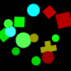
(85)
At least two thirds of the shapes are squares or a circle is in front of a green shape.
If exactly one shape is a yellow square a shape is a green square.
A gray shape is a different shape from a square or a shape is a red triangle.
A square is a yellow shape if and only if a triangle is above a green shape.
A red circle is smaller than a circle if and only if a cyan shape is above a red circle.

(86)
Less than half the shapes are green crosses and a cross is darker than a cross.
A shape is a red square or at least two shapes are green crosses.
There is a cross and a green cross is the same color as a cross.
A shape is a cyan shape or a green shape is smaller than a cross.
A cross is above a green shape if and only if a cross is lighter than a green cross.

(87)
A rectangle is the same color as a gray shape if and only if there is a red circle.
If more than four shapes are cyan shapes the smallest circle is a gray shape.
Less than one shape is a cyan triangle and a shape is a gray square.
If at most a quarter of the shapes are pentagons the bigger rectangle is a cyan shape.
Exactly zero shapes are red shapes if and only if a shape is a cyan rectangle.

(88)
A circle is a gray shape if and only if not all shapes are gray circles.
More than two shapes are circles or a gray shape is a pentagon.
There is a rectangle and exactly a quarter of the shapes are ellipses.
At most half the shapes are gray circles if and only if more than three shapes are gray circles.
Less than three shapes are gray shapes if and only if a gray shape is an ellipse.

(89)
A circle is farther from a magenta pentagon than the cyan cross if and only if a green pentagon is smaller than a magenta shape.
If not a third of the shapes are green pentagons a shape is a magenta square.
A magenta shape is bigger than a cyan pentagon or exactly two shapes are pentagons.
The rightmost gray shape is a square if and only if a cyan square is farther from a gray shape than the cyan shape.
At least two shapes are cyan shapes and there is a green shape.

(90)
A green triangle is to the left of a triangle or a shape is a cyan ellipse.
A triangle is a gray shape or a triangle is a different color from a blue shape.
At most five cyan shapes are crosses if a gray shape is a different shape from a cyan triangle.
If there is a gray cross the rightmost magenta shape is a cross.
A shape is a triangle if and only if the darkest triangle is a magenta shape.

(91)
More than three quarters of the shapes are red shapes if and only if there is a cyan square.
Less than four circles are blue shapes or the right triangle is a yellow shape.
There is a blue semicircle if a shape is a red triangle.
A blue circle is above a gray cross if and only if a gray cross is to the right of a rectangle.
There is a green semicircle or a blue rectangle is to the left of a yellow shape.

(92)
A cross is darker than a cyan shape or a blue shape is smaller than a green cross.
If a gray cross is below a green cross a semicircle is a green shape.
If a red shape is behind a green cross there is a blue shape.
If a yellow shape is a different shape from a red semicircle the bigger semicircle is a gray shape.
If a blue cross is above a blue shape the smaller gray shape is a semicircle.
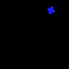
(93)
There is a gray cross if there is a blue shape.
There is a magenta triangle if and only if there is a semicircle.
A shape is a blue cross if and only if a shape is a cross.
Not a third of the blue shapes are circles and exactly one shape is a blue cross.
A shape is a rectangle or a blue shape is an ellipse.

(94)
A blue pentagon is in front of a blue circle if and only if the lighter red shape is a pentagon.
A shape is a cross if a red shape is a circle.
A green pentagon is in front of a yellow shape and less than all shapes are circles.
A rectangle is above a yellow ellipse or a cyan shape is closer to a green circle than the rectangle.
A blue shape is behind a green shape and a blue shape is the same shape as a yellow circle.

(95)
If the darkest pentagon is a green shape a pentagon is darker than a yellow shape.
A green shape is a different shape from a green pentagon if and only if a shape is a green pentagon.
The lightest pentagon is a green shape and a shape is a cyan shape.
There is a gray triangle or less than a quarter of the triangles are green shapes.
A triangle is a different color from a green shape and a pentagon is a different color from a cyan triangle.
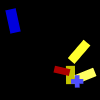
(96)
More than four shapes are yellow rectangles and a yellow shape is behind a red rectangle.
A yellow semicircle is behind a blue shape if and only if not zero shapes are yellow rectangles.
A shape is a rectangle if and only if there is a cross.
If not a third of the shapes are yellow rectangles a shape is an ellipse.
The lower blue shape is a rectangle if and only if a shape is a yellow circle.

(97)
There is a cyan cross and a cyan shape is to the right of a cyan cross.
A circle is closer to a cyan cross than the red pentagon if and only if a cyan semicircle is to the right of a cyan shape.
If the darker pentagon is a magenta shape a red cross is smaller than a cross.
A cyan shape is smaller than a cyan cross and a green shape is the same color as a red semicircle.
There is a cross if and only if there is a cyan shape.

(98)
More than one ellipse is a green shape if and only if a shape is a magenta ellipse.
There is a circle or a green shape is a pentagon.
A rectangle is darker than a green ellipse and the right magenta shape is a pentagon.
If a gray shape is below a pentagon a green shape is a pentagon.
The ellipse farther from the magenta pentagon is a green shape or a rectangle is behind a green ellipse.

(99)
A shape is a semicircle or the lightest cyan shape is an ellipse.
Not five ellipses are green shapes if and only if a cyan semicircle is to the right of a cyan shape.
There is a yellow shape or a shape is a magenta semicircle.
If exactly four shapes are blue ellipses not no blue shape is an ellipse.
A yellow shape is a different shape from a magenta ellipse or the uppermost semicircle is a cyan shape.
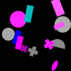
(100)
Exactly five rectangles are gray shapes if and only if a magenta cross is closer to a circle than the cyan rectangle.
The magenta shape closer to the cyan shape is a square if and only if exactly zero rectangles are magenta shapes.
More than two shapes are cyan shapes or a magenta shape is bigger than a green circle.
A magenta shape is the same shape as a gray semicircle if and only if a cyan shape is closer to a gray semicircle than the ellipse.
An ellipse is a blue shape or at most three quarters of the shapes are magenta rectangles.